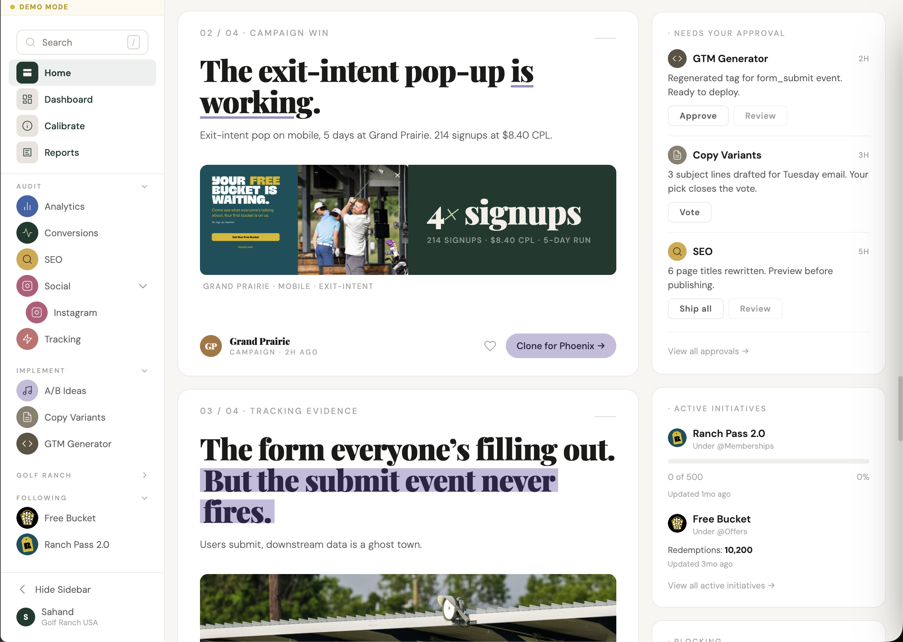
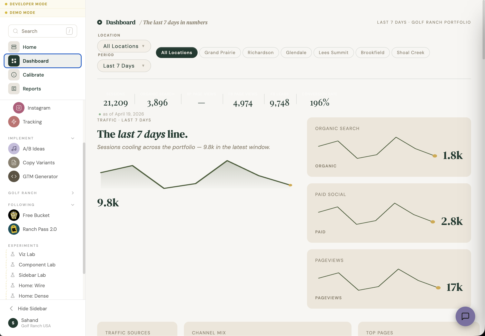
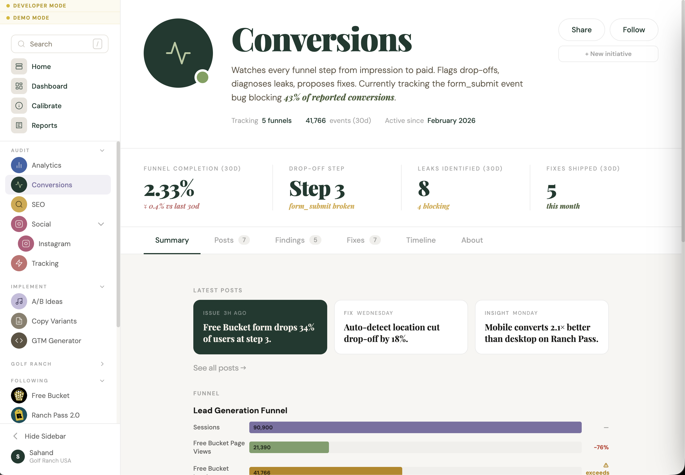
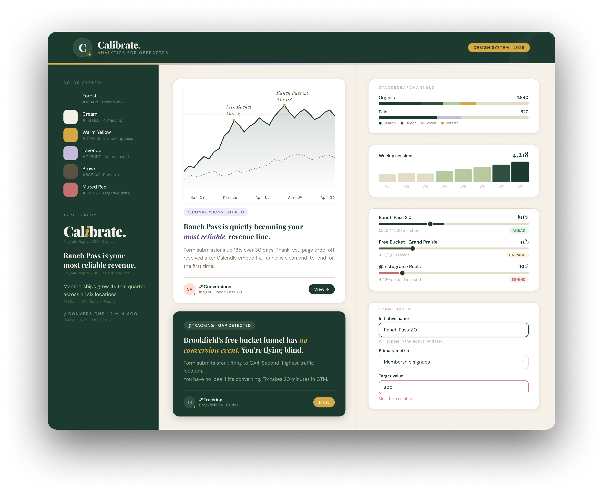
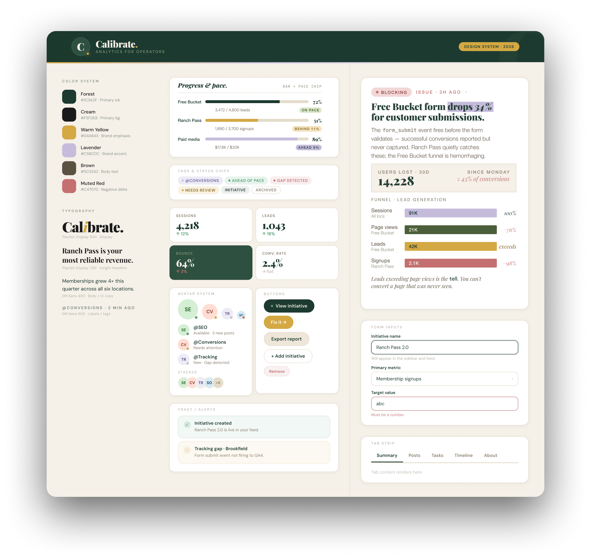

Calibrate is a feed-based analytics product for anyone who looks at data and wishes it just told them what to do.
Anyone with a website, a product, or a Meta ad campaign has analytics. Dashboards. GA4. A Looker instance if they're lucky. And yet most of the time, nobody actually knows what the numbers mean. You open the dashboard, see 2.33% conversion, and wonder if that's good. The Free Bucket form drops 34% because form_submit fires before validation — and nobody catches it for weeks. A conversion event stops firing on one page — and the chart still looks fine. The data is there. The interpretation isn't.
Dashboards put raw data in front of you and wait for you to interrogate it. Calibrate flips the posture — AI characters interrogate the data for you and bring back what matters. @Conversions watches funnels. @Tracking watches events. @SEO watches search. Each one reads its domain, forms the questions, and writes up what you need to know — in plain English, in a feed. The dashboard still exists, but as a fallback for when you want to dig. The feed is the product.

Midway through, I audited the app against real user tasks — Monday morning triage, weekly performance check, funnel diagnosis, campaign wrap-ups. The architecture needed a flip. Dashboard became the raw-data explorer. The feed became the default view.
That's the real case study. Not a beautiful design system — identifying what the user actually needed and rebuilding for it.

Four top-level destinations — Home as feed, Dashboard as explorer, Reports as shareable editorial summaries, Calibrate as approvals and decisions. A personality system of 13 AI characters, each watching a domain. Initiative tracking with stats, posts, tasks, and timeline. An 18-component data UI library, built from scratch.

Color, type, and component patterns that let every insight feel written, not rendered.


Calibrate isn't a Figma deliverable. I designed the product, built it in Claude Code, and shipped it to production on Vercel. Every component in the UI library, every character profile, every feed card, every chart — designed and coded by one person. The pilot is running on Golf Ranch data right now.
This project is actively being built — some things may be broken or incomplete. The app is hooked up to real data and I'm adding functionality every day.